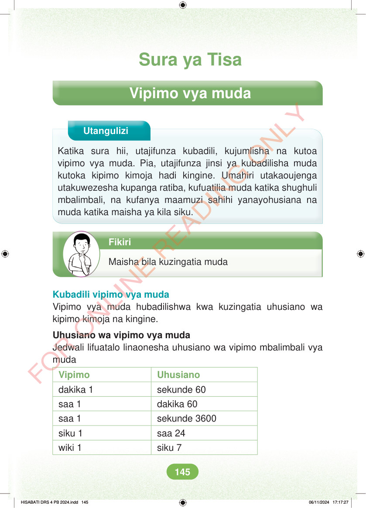

Sura ya Tisa Vipimo vya muda Utangulizi Katika sura hii, utajifunza kubadili, kujumlisha na kutoa vipimo vya muda. Pia, utajifunza jinsi ya kubadilisha muda kutoka kipimo kimoja hadi kingine. Umahiri utakaoujenga utakuwezesha kupanga ratiba, kufuatilia muda katika shughuli mbalimbali, na kufanya maamuzi sahihi yanayohusiana na muda katika maisha ya kila siku. Fikiri Maisha bila kuzingatia muda Kubadili vipimo vya muda Vipimo vya muda hubadilishwa kwa kuzingatia uhusiano wa kipimo kimoja na kingine. Uhusiano wa vipimo vya muda Jedwali lifuatalo linaonesha uhusiano wa vipimo mbalimbali vya muda Vipimo Uhusiano dakika 1 sekunde 60 saa 1 dakika 60 saa 1 sekunde 3600 siku 1 saa 24 wiki 1 siku 7 HISABATI DRS 4 PB 2024.indd 145 HISABATI DRS 4 PB 2024.indd 145 06/11/2024 17:17:27 06/11/2024 17:17:27